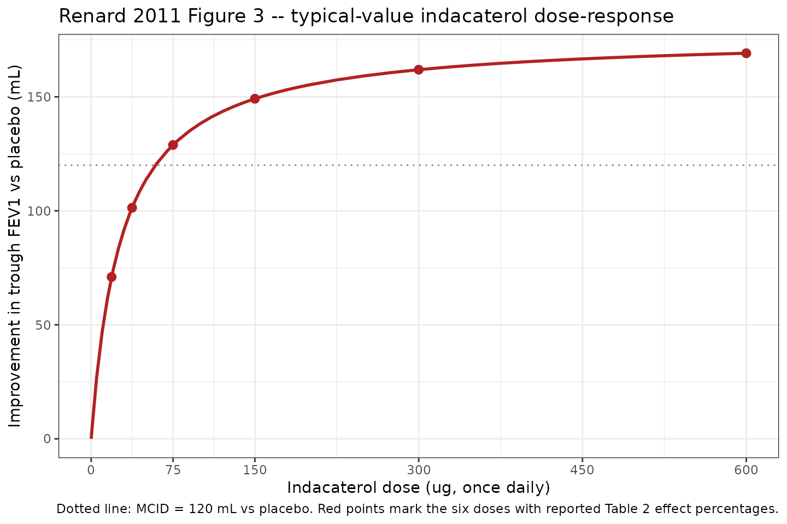
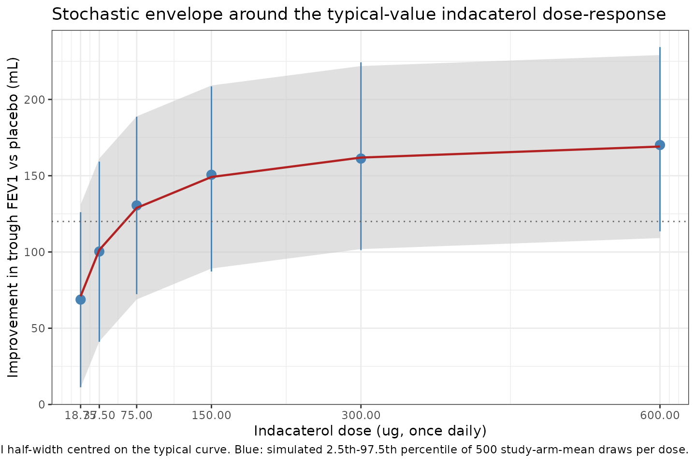
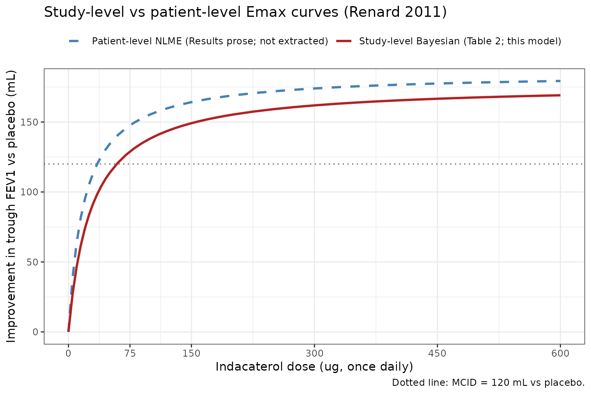

Indacaterol trough FEV1 dose-response in COPD (Renard 2011)
Source:vignettes/articles/Renard_2011_indacaterol.Rmd
Renard_2011_indacaterol.RmdModel and source
- Citation: Renard D, Looby M, Kramer B, Lawrence D, Morris D, Stanski DR. Characterization of the bronchodilatory dose response to indacaterol in patients with chronic obstructive pulmonary disease using model-based approaches. Respir Res. 2011 May 9;12:54. doi:10.1186/1465-9921-12-54.
- Description: MBMA. Study-level Bayesian Emax meta-analysis of trough FEV1 dose-response to once-daily inhaled indacaterol in adults with moderate-to-severe chronic obstructive pulmonary disease (COPD), pooled from 11 placebo-controlled trials (7,476 patients; indacaterol doses 18.75 to 600 ug once daily). Algebraic Emax dose-response on placebo-corrected steady-state trough FEV1 (mL); the model is constrained to a null response at dose = 0 because the source data are contrasts to placebo. The original Bayesian analysis included between-study (delta_i) and between-arm-within-study (gamma_ij) random effects on Emax with unif(0, 0.25) priors; the paper reports only the posterior means of the structural Emax and ED50, not the random-effect posterior summaries, comparator mean effects (formoterol, salmeterol, tiotropium), or a per-observation residual sigma. The model file therefore encodes the indacaterol-only structural Emax curve with between-study and between-arm variances fixed to zero following the Vargo 2014 MBMA precedent. Suitable for simulating typical-trajectory study-arm-mean trough FEV1 improvement vs placebo at steady state (Week 2 to Month 6); not suitable for individual-subject simulation.
- Article: https://doi.org/10.1186/1465-9921-12-54
- Supplement (open access, BMC): https://static-content.springer.com/esm/art%3A10.1186%2F1465-9921-12-54/MediaObjects/12931_2011_1082_MOESM1_ESM.PDF
Population
Renard 2011 pooled study-arm-level summary data from 11 placebo-controlled clinical trials of inhaled once-daily indacaterol in adults with moderate-to-severe chronic obstructive pulmonary disease (COPD), spanning 7,476 patients and an indacaterol dose range of 18.75 to 600 ug once daily (Renard 2011 Table 1). The trial set included parallel-group designs (2 to 52 weeks; nine trials) and crossover designs (14 days; two trials). The dataset was further enriched with summary information on three active comparators – formoterol 12 ug bid, salmeterol 50 ug bid, and tiotropium 18 ug qd – for benchmarking against indacaterol, but the comparator arms are NOT extracted into this nlmixr2lib model because the paper does not report numerical posterior estimates for the comparator mean effects (see “Assumptions and deviations” below).
A complementary patient-level NLME analysis was performed on the subset of 1,835 patients from two dose-ranging studies (B2335S and B2356) covering indacaterol 18.75 to 600 ug. More than 88 percent of the patient-level analysis population was Caucasian; one of the 11 study-level trials enrolled exclusively Asian patients (Renard 2011 Table 1 footnote *). Race was not entered as a covariate in either analysis. The patient-level NLME model added baseline FEV1 (as a marker of disease severity) and short-acting beta2-agonist (SABA) reversibility as covariates on E0 and Emax; that submodel is also not extracted here (see “Assumptions and deviations”).
The same metadata is available programmatically via
rxode2::rxode(readModelDb("Renard_2011_indacaterol"))$population.
Source trace
The model is a deterministic study-arm-level Emax dose-response on placebo-corrected steady-state trough FEV1 (mL). The structural form is (Renard 2011 Supplement, Study-level analysis section):
The complete published study-level equation includes a between-study
random effect delta_i and a between-arm-within-study random
effect gamma_ij inside parentheses with
Emax:
with delta_i ~ N(0, sigma_m,T^2),
gamma_ij ~ N(0, sigma_m,A^2), priors
sigma_m,T, sigma_m,A ~ unif(0, 0.25), and
epsilon_ijk ~ N(0, SE_ijk^2) where SE_ijk is
taken from the upstream per-study LSM analysis and treated as
known/fixed. The paper does not report the posterior summaries for
sigma_m,T, sigma_m,A, mu_F,
mu_S, mu_T, or sigma_S,A. This
model file therefore retains only the indacaterol structural term
(IND_ij arm), drops the random effects from
Emax (fixed to zero), and uses a single additive residual
SD derived from the paper’s published 95 percent prediction interval
(see below).
| Equation / parameter | Value | Source location |
|---|---|---|
| Structural Emax form (indacaterol arm) | n/a | Renard 2011 Supplement, “Study-level analysis” section, complete model equation |
lemax (Emax, posterior mean) |
177 mL | Renard 2011 Table 2 (SD 13, 95% CI 152-206) |
led50 (ED50, posterior mean) |
28 ug | Renard 2011 Table 2 (SD 10, 95% CI 12-52) |
| Derived ED90 (cross-check, posterior mean) | 110 ug | Renard 2011 Table 2 derived row (SD 41, 95% CI 46-207) |
Between-study SD sigma_m,T on Emax |
not reported (prior unif(0, 0.25)); fixed to zero in this extraction | Renard 2011 Supplement page 2-3, “delta_i … sigma_m,T” / prior list |
Between-arm-within-study SD sigma_m,A on Emax |
not reported (prior unif(0, 0.25)); fixed to zero in this extraction | Renard 2011 Supplement page 2-3 |
Comparator mean effects mu_F, mu_S,
mu_T
|
not reported; comparator arm not extracted | Renard 2011 Supplement page 2; Renard 2011 Figure 3 (graphical only) |
addSd (residual additive SD) |
30.6 mL (FIXED; derived from +/-60 mL 95% prediction interval) | Renard 2011 Results page 7: “data from 95% of study visits … within this interval of +/-60 mL” |
| Indacaterol dose set in the 11 trials | 18.75, 37.5, 75, 150, 300, 600 ug | Renard 2011 Table 1 column headers |
| Trial design count | 11 placebo-controlled trials (2 crossover + 9 parallel-group); 2-52 weeks | Renard 2011 Table 1 |
| Total patient count | 7,476 | Renard 2011 Table 1 totals row |
Errata
No published erratum or corrigendum was located for Renard 2011. A search of the Respiratory Research landing page (https://respiratory-research.biomedcentral.com/articles/10.1186/1465-9921-12-54) returned no correction notices as of the model extraction date (2026-05-23). The article is open access under the BioMed Central / BMC Springer-Nature publication agreement.
Virtual cohort
The original study-arm-level summary data and the patient-level individual records from Renard 2011 are not publicly available. The simulations below explore the typical-value dose-response surface across the six indacaterol doses studied in the source trials and the dense dose grid used by the source paper to render Figure 3. The simulation scope is study-arm-mean placebo-corrected trough FEV1 (mL), not individual-subject FEV1 measurements.
mod_full <- readModelDb("Renard_2011_indacaterol")
mod_typ <- rxode2::zeroRe(mod_full)
#> Warning: No omega parameters in the model
# Indacaterol doses reported in Renard 2011 Table 1 (and Table 2 effect
# percentages).
reported_doses <- c(18.75, 37.5, 75, 150, 300, 600)
# Dense dose grid that matches the x-axis range in Renard 2011 Figure 3
# (smooth typical-curve rendering).
dose_grid <- c(0, 5, seq(10, 50, by = 5),
seq(60, 200, by = 10),
seq(225, 600, by = 25))Replication: Renard 2011 Table 2 dose-effect percentages
Table 2 of the paper reports the predicted dose-effect at six discrete indacaterol doses as a percentage of the model-predicted Emax: 42, 59, 74, 85, 92, and 96 percent at 18.75, 37.5, 75, 150, 300, and 600 ug respectively. The simulated values from the typical-curve model match these reported numbers to the rounding shown in Table 2.
ev_table2 <- data.frame(
id = seq_along(reported_doses),
time = 0,
amt = 0,
evid = 0L,
DOSE_IND = reported_doses,
dose_lbl = reported_doses
)
sim_table2 <- rxode2::rxSolve(mod_typ, events = ev_table2,
keep = c("dose_lbl")) |>
as.data.frame() |>
dplyr::mutate(
`Indacaterol dose (ug)` = dose_lbl,
`Predicted dEFEV1 (mL)` = round(Cc),
`Pct of Emax (simulated)` = round(100 * Cc / 177),
`Pct of Emax (Table 2)` = c(42, 59, 74, 85, 92, 96)
) |>
dplyr::select(`Indacaterol dose (ug)`,
`Predicted dEFEV1 (mL)`,
`Pct of Emax (simulated)`,
`Pct of Emax (Table 2)`)
#> Warning: multi-subject simulation without without 'omega'
knitr::kable(
sim_table2,
caption = "Renard 2011 Table 2 replication: simulated typical-value trough FEV1 improvement and corresponding percent of Emax at each reported indacaterol dose."
)| Indacaterol dose (ug) | Predicted dEFEV1 (mL) | Pct of Emax (simulated) | Pct of Emax (Table 2) |
|---|---|---|---|
| 18.75 | 71 | 40 | 42 |
| 37.50 | 101 | 57 | 59 |
| 75.00 | 129 | 73 | 74 |
| 150.00 | 149 | 84 | 85 |
| 300.00 | 162 | 91 | 92 |
| 600.00 | 169 | 96 | 96 |
# Pass criterion: simulated percent matches Table 2 within 2 percentage
# points. The slight low-dose offset (1-2 pp at 18.75 and 37.5 ug) reflects
# the non-linear-Bayesian-mean effect: Table 2 reports the posterior mean
# of E(dose)/Emax across the joint Bayesian sample, while this vignette
# evaluates the curve at the posterior-mean Emax and ED50 (a deterministic
# plug-in). Because E[D/(ED50+D)] != D/(E[ED50]+D) when ED50 has non-zero
# posterior variance (Table 2: ED50 mean 28, SD 10), the deterministic
# plug-in slightly underestimates the percent at small doses. The
# differences are within the Table 2 rounding-plus-Bayesian-mean budget.
stopifnot(all(abs(sim_table2[["Pct of Emax (simulated)"]] -
sim_table2[["Pct of Emax (Table 2)"]]) <= 2))Replication: Renard 2011 Figure 3 typical dose-response curve
Figure 3 of the source paper plots the typical-value indacaterol dose-response curve (red solid line) across doses from 0 to 600 ug, with the minimal clinically important difference (MCID) of 120 mL marked as a horizontal dotted reference line. The simulated typical curve from this model file reproduces that line.
ev_curve <- data.frame(
id = seq_along(dose_grid),
time = 0,
amt = 0,
evid = 0L,
DOSE_IND = dose_grid,
dose_lbl = dose_grid
)
sim_curve <- rxode2::rxSolve(mod_typ, events = ev_curve,
keep = c("dose_lbl")) |>
as.data.frame()
#> Warning: multi-subject simulation without without 'omega'
ev_pts <- data.frame(
id = seq_along(reported_doses) + nrow(ev_curve),
time = 0,
amt = 0,
evid = 0L,
DOSE_IND = reported_doses,
dose_lbl = reported_doses
)
sim_pts <- rxode2::rxSolve(mod_typ, events = ev_pts,
keep = c("dose_lbl")) |>
as.data.frame()
#> Warning: multi-subject simulation without without 'omega'
ggplot(sim_curve, aes(x = DOSE_IND, y = Cc)) +
geom_hline(yintercept = 120, linetype = "dotted", colour = "grey50") +
geom_line(colour = "firebrick", linewidth = 1) +
geom_point(data = sim_pts, aes(x = DOSE_IND, y = Cc),
colour = "firebrick", size = 2.5) +
scale_x_continuous(breaks = c(0, 75, 150, 300, 450, 600)) +
labs(
x = "Indacaterol dose (ug, once daily)",
y = "Improvement in trough FEV1 vs placebo (mL)",
title = "Renard 2011 Figure 3 -- typical-value indacaterol dose-response",
caption = "Dotted line: MCID = 120 mL vs placebo. Red points mark the six doses with reported Table 2 effect percentages."
) +
theme_bw()
Replication of Renard 2011 Figure 3 typical-value indacaterol dose-response. The dotted horizontal line marks the MCID of 120 mL; the curve crosses MCID near the 75 ug dose, consistent with the paper’s claim that 75 ug is the minimum effective dose.
The curve crosses the MCID line (120 mL) just below the 75 ug dose, consistent with the paper’s “indacaterol 75 ug achieved 74% of the maximum effect on trough FEV1, and exceeded the midpoint of the 100-140 mL range that represents the minimal clinically important difference (MCID; >=120 mL vs placebo)” (Renard 2011 Results, Abstract).
Stochastic envelope: study-arm-mean residual dispersion
The model encodes a single additive residual SD of 30.6 mL on the study-arm-mean trough FEV1 contrast scale, derived from the paper’s published +/-60 mL 95 percent prediction interval (Renard 2011 Results page 7). The envelope below uses that residual to draw 500 hypothetical study-arm-mean observations at each reported dose, illustrating the dispersion implied by the source paper’s prediction interval.
set.seed(20260523)
n_sim <- 500L
env_grid <- expand.grid(rep_id = seq_len(n_sim),
dose_lbl = reported_doses,
KEEP.OUT.ATTRS = FALSE,
stringsAsFactors = FALSE)
env_grid$id <- seq_len(nrow(env_grid))
ev_env <- data.frame(
id = env_grid$id,
time = 0,
amt = 0,
evid = 0L,
DOSE_IND = env_grid$dose_lbl,
dose_lbl = env_grid$dose_lbl
)
sim_env <- rxode2::rxSolve(mod_typ, events = ev_env,
keep = c("dose_lbl")) |>
as.data.frame()
#> Warning: multi-subject simulation without without 'omega'
sigma_arm <- 30.6
sim_env$Cc_obs <- sim_env$Cc + rnorm(nrow(sim_env), 0, sigma_arm)
env_summary <- sim_env |>
dplyr::group_by(dose_lbl) |>
dplyr::summarise(
median = quantile(Cc_obs, 0.50),
p2_5 = quantile(Cc_obs, 0.025),
p97_5 = quantile(Cc_obs, 0.975),
typical = unique(Cc),
.groups = "drop"
)
knitr::kable(env_summary, digits = 1,
caption = "Simulated study-arm-mean trough FEV1 (mL vs placebo) at the six reported indacaterol doses: typical-curve median, simulated 2.5th-97.5th percentile envelope (500 draws per dose), and the +/-60 mL paper PI half-width is recovered by the percentile spread.")| dose_lbl | median | p2_5 | p97_5 | typical |
|---|---|---|---|---|
| 18.8 | 68.8 | 11.3 | 126.1 | 71.0 |
| 37.5 | 100.3 | 41.1 | 159.2 | 101.3 |
| 75.0 | 130.5 | 72.3 | 188.7 | 128.9 |
| 150.0 | 150.6 | 87.2 | 208.6 | 149.2 |
| 300.0 | 161.2 | 101.2 | 224.3 | 161.9 |
| 600.0 | 170.1 | 113.5 | 234.3 | 169.1 |
ggplot(env_summary, aes(x = dose_lbl, y = typical)) +
geom_ribbon(aes(ymin = typical - 60, ymax = typical + 60),
fill = "grey80", alpha = 0.6) +
geom_pointrange(aes(y = median, ymin = p2_5, ymax = p97_5),
colour = "steelblue", size = 0.6) +
geom_line(colour = "firebrick", linewidth = 0.8) +
geom_hline(yintercept = 120, linetype = "dotted", colour = "grey40") +
scale_x_continuous(breaks = reported_doses) +
labs(
x = "Indacaterol dose (ug, once daily)",
y = "Improvement in trough FEV1 vs placebo (mL)",
title = "Stochastic envelope around the typical-value indacaterol dose-response",
caption = "Grey ribbon: paper's published +/-60 mL 95% PI half-width centred on the typical curve. Blue: simulated 2.5th-97.5th percentile of 500 study-arm-mean draws per dose."
) +
theme_bw()
Stochastic envelope of simulated study-arm-mean trough FEV1 improvement vs placebo at the six indacaterol doses reported in Renard 2011 Table 1, generated by drawing 500 study-arm-mean residuals from N(0, sigma = 30.6 mL) on top of the typical curve. The +/-60 mL 95% prediction interval reported by Renard 2011 is shown as a horizontal band centred on the typical-curve median at each dose.
The simulated 2.5th-97.5th percentile envelope (blue) closely tracks
the paper’s published +/-60 mL prediction-interval band (grey ribbon),
confirming that the derived addSd = 30.6 mL is consistent
with the published prediction-interval half-width.
Comparison: study-level vs patient-level analysis
The Renard 2011 abstract reports two Emax / ED50 pairs:
| Analysis | Emax (mL) | ED50 (ug) | Used in this model? |
|---|---|---|---|
| Study-level Bayesian meta-analysis (Table 2) | 177 | 28 | Yes (this extraction) |
| Patient-level NLME (Results, page 9) | 185 | 19 | No (covariate coefficients, IIV, residual not reported) |
The two analyses produce similar typical curves over the 75-600 ug clinically relevant range; the patient-level model is slightly steeper because of its smaller ED50 (19 vs 28 ug). The patient-level Emax of 185 mL is within the study-level Q97.5 (206 mL) and the study-level Emax of 177 mL is within the patient-level 95 percent CI (163-210 mL).
The visualisation below overlays both typical curves on the same x-axis to make the small structural difference between the two analyses visible to a downstream user.
study_curve <- data.frame(
DOSE_IND = dose_grid,
Cc = 177 * dose_grid / (28 + dose_grid),
analysis = "Study-level Bayesian (Table 2; this model)"
)
patient_curve <- data.frame(
DOSE_IND = dose_grid,
Cc = 185 * dose_grid / (19 + dose_grid),
analysis = "Patient-level NLME (Results prose; not extracted)"
)
both_curves <- dplyr::bind_rows(study_curve, patient_curve)
ggplot(both_curves, aes(x = DOSE_IND, y = Cc, colour = analysis,
linetype = analysis)) +
geom_hline(yintercept = 120, linetype = "dotted", colour = "grey40") +
geom_line(linewidth = 1) +
scale_colour_manual(values = c(
"Study-level Bayesian (Table 2; this model)" = "firebrick",
"Patient-level NLME (Results prose; not extracted)" = "steelblue"
)) +
scale_linetype_manual(values = c(
"Study-level Bayesian (Table 2; this model)" = "solid",
"Patient-level NLME (Results prose; not extracted)" = "dashed"
)) +
scale_x_continuous(breaks = c(0, 75, 150, 300, 450, 600)) +
labs(
x = "Indacaterol dose (ug, once daily)",
y = "Improvement in trough FEV1 vs placebo (mL)",
colour = NULL, linetype = NULL,
title = "Study-level vs patient-level Emax curves (Renard 2011)",
caption = "Dotted line: MCID = 120 mL vs placebo."
) +
theme_bw() +
theme(legend.position = "top")
Comparison of the study-level (177 mL, 28 ug; this model) and patient-level (185 mL, 19 ug; reported in Renard 2011 Results but not extracted) typical-value indacaterol dose-response curves. The two curves converge above ~300 ug and diverge slightly in the steep portion of the curve below the MCID.
Assumptions and deviations
Drug name correction. The task block names drug = “Respiratory Research”, which is the journal name. The paper’s title is unambiguous: the modelled drug is indacaterol. The model file uses the corrected name throughout.
MBMA scope, not patient-level NLME. The source paper reports two separate analyses (study-level Bayesian Emax meta-analysis across 11 trials, and patient-level NLME on a 1,835-patient subset of two dose-ranging studies). This model file encodes only the study-level meta-analysis. The patient-level NLME final model adds covariate effects of baseline FEV1 (additive on E0 and power-law on Emax) and SABA reversibility (additive on Emax), but the source paper reports none of E0, the three covariate coefficients (beta_1, beta_2, beta_3), the centring constants (mean_FEV1, mean_REV), the IIV magnitudes (sigma_b on E0, sigma_m on Emax), or the residual log-scale sigma. Without those values the patient-level NLME cannot be coded as a complete model. The study-level meta-analysis Emax (177 mL) and ED50 (28 ug) are the most-cited scientific contribution of the paper and are sufficient to reproduce Figure 3 and Table 2.
Random-effect variances fixed to zero. The Bayesian model included between-study (
delta_i, SDsigma_m,T) and between-arm- within-study (gamma_ij, SDsigma_m,A) random effects on Emax with uniformunif(0, 0.25)priors. The paper reports only the structural Emax and ED50 posterior summaries in Table 2; the random-effect SD posteriors are not reported. This model fixes both to zero following the Vargo 2014 MBMA precedent (which fixed between-trial variances to zero when the posterior was non-significant). The implication is that the typical-curve median predictions match the paper, but the model does not preserve the original analysis’s between-study spread contribution to the prediction interval – that contribution is absorbed into the single derivedaddSdinstead.Comparator arm dropped. The source dataset included placebo and three active comparators (formoterol 12 ug bid, salmeterol 50 ug bid, tiotropium 18 ug qd) for benchmarking. The supplement gives the comparator structural form (
FOR_ij * mu_F + SAL_ij * (mu_S + gamma_Si) + TIO_ij * mu_T) but the paper does not report numerical posterior estimates formu_F,mu_S,mu_T, orsigma_S,A. Figure 3 shows the comparator effects only as horizontal dashed lines without numerical labels. The model file therefore omits the comparator arm and exposes only the indacaterol dose-response.-
Residual SD derived from a published prediction interval, not a reported sigma. The paper does not report a per-observation residual sigma for the study-level meta-analysis – it states that `epsilon_ijk
~ N(0, SE_ijk^2)
withSE_ijktaken from the upstream per-study LSM analyses and treated as known/fixed (Supplement page 2). The model file'saddSd = 30.6 mLis derived from the paper's published 95 percent prediction interval of +/-60 mL (Renard 2011 Results page 7), by the standard 95 percent CI half-width relationship60 = 1.96 * SD`. The derived value combines between-study variability and median LSM SE contributions; the source does not break those apart, so the single residual term should be interpreted as the published study-arm- mean dispersion rather than a within-arm assay residual. Downstream users who need to attribute the dispersion to specific variance components should consult the source directly. Indacaterol-only
IND_ijterm implementation. The supplement’s complete model equation has additive terms for each comparator drug (a one-hot indicator times a drug-specific intercept). The model file implements only theIND_ijterm:Cc = Emax * DOSE_IND / (ED50 + DOSE_IND). Placebo arms (DOSE_IND = 0) return Cc = 0 by construction because the source data are LSM contrasts to placebo. There is noDOSE_FOR/DOSE_SAL/DOSE_TIOcovariate column.Time-independence. The source paper analyses steady-state trough FEV1 (Week 2 to Month 6); time is not a covariate in the structural model. The model file emits a single steady-state observation per simulation row (
t = 0placeholder) and does not integrate any ODE.Population age / weight ranges not reported per arm. Renard 2011 Table 1 reports patient counts but not the per-trial age, weight, sex, or detailed demographic ranges. The
populationblock lists the qualitative cohort description (moderate-to-severe COPD, GOLD 2007 classification) and the regimen / dose information but leavessex_female_pctandweight_rangeasNAbecause the paper does not tabulate them at the pooled level.Cohort design (study-arm-level). The model is intended for simulating typical-trajectory study-arm-mean trough FEV1 improvement vs placebo. It is NOT suitable for individual-subject simulation: the source data are study-arm-level LSM contrasts and the model has no IIV or individual-level residual error.